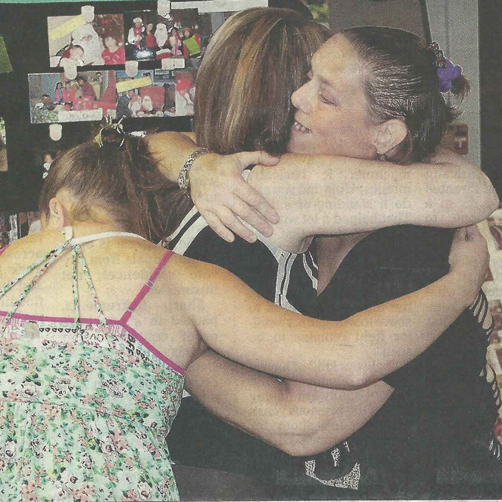

Below are a fewis a writing samples published in the Utica Observer-Dispatch, a newspaper I was an editor/reporter intern for during the summer of 2014. More published work can be found at www.uticaod.com.
Fresh Air kids get 'taste of a different life'
BY EMMA DOOLITTLE
Eight-year-old Daisy Aguirre Bonola and 12-year-old Amirah Irby-Shabazz stepped off the bus Tuesday to enjoy their second summer away from New York City with Donna Yancey of Lowville.
For the next week, Amirah and Daisy, along with other children from low-income families of NYC, will swim, play in the creek, feed the cows, enjoy sports and have picnics and campfires in rural areas thanks to The Fresh Air Fund.
Yancey and her family have been a host family for six years and always look forward to spending another summer with the Fresh Air Children.
"It's like a foreign exchange program," she said. "They teach me about city life, such as the food they eat and the culture of the city, and we share the country with them."
Amirah, who has been participating in the program since she was six said, "I love meeting new people and spending time with the families. It's definitely worth the long bus ride."
Amirah and Daisy are not alone. Another dozen children came to spend part of their summer in the Utica area.
One of those children, Kaia Gonzalez, 13, has been participating in the program since she was eight. She returned to her host family in Morrisville for the third summer. Her host, Billie Curtis, can't wait to take her on hikes, bike rides and to the zoo.
"I really enjoy getting a taste of a different life, and I love knowing that I can help these children," Curtis said.
The children who participate in the program are used to the hustle and bustle of city life.
"I love finding out how other people live," Kaia said. "It's very quiet up here, which is nice."
Camp helps area teenagers explore medical field
"The program exposes kids to opportunities they don't know exist." -Kevin Hoehn, a doctor of pharmacy who started the MediCamp program.
BY EMMA DOOLITTLE
NEW HARTFORD - Choosing a college can be easier if you have a career plan. That's one reason staff members at Faxton St. Luke's Healthcare want to expose students to the medical field at an early age.
Sixteen teenagers, ages 15 through 18, saw firsthand what a health care career could look like this week at the local hospitals' MediCamp, which ends today.
Registered nurse Shelly Forrester helps with the program, which began four years ago, and tries to fit as many activities as possible into the two-day program.
"We take them to the emergency room, the nursery, radiology, the operating room and the sim lab where they simulate an emergency with our sim man and sim baby," she said.
Campers also get to learn about the ambulance, Mercy Flights, cultural diversity, strokes, CPR, and how to insert IVs. The teens are given workbooks about different parts of the body, and a packet on what it takes to become a health care professional.
Kevin Hoehn, a doctor of pharmacy who started the program, said the students learn more than some employees of St. Luke's because they get to see everything.
"The program exposes kids to opportunities they don't know exist," he said. And the campers couldn't agree more.
First-time camper Zara Mirza is interested in pharmacy and pediatrics, but is trying to narrow her options.
"Since this is a smaller hospital, you get a sense of the teamwork here, and I like seeing the atmosphere that doctors and nurses work in," she said. "I think it's a great opportunity."
Ifrah Hassan is a first-time camper interested in surgery or becoming a nurse.
"I love watching what the doctors and nurses do, and I can't wait to see the ER," he said. "I just wish the program was longer, but it's still a great opportunity."
Live Shakespeare this weekend at Canal Days
BY EMMA DOOLITTLE
LITTLE FALLS - This week's Canal Celebration is full of many activities, but the one you don't want to miss is the Little Falls Theater Co.'s Shakespeare in the Park that will feature a production of "Twelfth Night."
Matt Powers, director and performer, has worked on adjusting the script for an outdoor setting and finding the perfect cast.

"Production is going well," he said. "We have a smaller cast than last year, which allows us to focus on interactions of characters and the actual language making, which will help make the play clear for a modern day audience."
Shakespeare in the Park is a relatively new event to Little Falls, and the Little Falls Theater Co. is new as well. It started just a few years ago after Powers and a friend of his decided to put on a play.
Thanks to the help of the owner of The Mustard Seed, Juli Webster, and her group, Chicks Along the Canal, the theater company has been promoted quite a bit and will be included in the Canal Celebration as a yearly event.
Last year's Shakespeare in the Park brought out about 90 people per show, and Powers hopes to have a similar turnout or more.
"I think we have a phenomenal show that'll be a lot of fun," he said. "I hope people sincerely come out and enjoy the show. I want to show people that in order to really appreciate Shakespeare, you need to see the play first hand."
The first performance will be at Benton's Landing at 7 p.m. today followed by performances at 4 p.m. Saturday and 3 p.m. Sunday at Sterzinar Park.
All performances are free for the public, and people are welcome to bring their own water and seating. There will be food vendors.
For information, visit www.littlefallsny.com/CanalDays/Schedule.html.
Family Place celebrates successes despite closing
BY EMMA DOOLITTLE
From a few AmeriCorps volunteers to employees of Kids Oneida, Family Place has grown for the past 17 years.
But after the many years, the organization no longer can stay open due to a lack of funding, said coordinator Mary Ann Stockton.
"I'm celebrating the 17 years of success we've had rather than saying goodbye," she said during Thursday's farewell celebration at the Genesee Street, Utica, location.

Family Place has been helping refugees, parents and others learn and grow in the Utica area through programs, such as parenting education programs and resource and support groups.
But it's always been a struggle to find the funding, Stockton said.
Thanks to small grants from local businesses and fundraising done by volunteers, it has been able to stay open.
The closure was bad news for the more than 600 families a year that are supported by Family Place.
Karen Swift is one of those clients, and has been going to Family Place for the past 16 years.
"It's been a huge impact on my life and has become my home away from home," she said. "It's a place where you can get help if needed."
Client Xenia Williams will miss the atmosphere at Family Place.
"I'm really sad because this place has the right spirit, and Mary is very understanding," Williams said. "People need that here."
Although Family Place is closing, the CEO of Kids Oneida, Steve Bulger, said his non-profit organization will continue a few of the programs that Family Place offered, such as the Nurturing Parent Program and Supervised Visitations.
"This event is really a thank you to the community, and I hope people remember that there are other options for them," he said.
Top